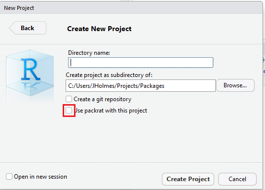

6 R
6.1 Introduction
R is used primarily for data cleaning and modeling. R is also used to build simple applications and html files using Rmarkdown, Rshiny and Rshiny dashboards. R can also be used with for Bayesian analyses.
Installation
Package Repositories
R’s main package repository is CRAN (the Comprehensive R Archive Network).
However, like most open source-code, many people and organizations maintain code on Github. The devtools package allows uses to download packages directly from github.
Initial workflow
Follow these initial first steps to set-up your R-project.
Start a new project
- Open a terminal which can read Rscript calls
- Navigate to the folder where R packages are stored
- Clone the ProjectTemplateR package
- Run the following line the terminal, replacing
ProjNamewith the name of your project
Rscript ProjectTemplateR/R/main.R -p "ProjName"Version control files
- .gitignore
- .Rbuildignore
- .Rprofile
- .travis.yaml
- DESCRIPTION
- NAMESPACE
- LICENSE
- README.md
- XXX.Rproj
packrat/
- init.R
- packrat.lock
- packrat.opts
R/ tests/ man/*
Debugging
R offers a number of useful built-in functions for debugging, and user-contributed packages are also available to provide additional functionality. The simplest method is to insert commands into your code to print diagnostic“check points” during its execution, using functions such as cat(), print(), or sink().
R also has a more sophisticated debugging system, which is supported by a GUI in the RStudio IDE. The most direct way to mark a function for debugging is to use debug(functionname). When this function is called, normal execution will be suspended, and you will enter the browser display. Commands within the debugged function can then be executed one at a time, and output can be inspected by the programmer along the way. You can set a function to begin debugging partway through its execution with setBreakpoint() or trace(). If an error is encountered (whether or not the function was being debugged), the traceback() command can be used to view the stack of nestedfunction calls at the time of the most recent error.
We illustrate debugging in RStudio with the following example. Suppose we want to debug the lm() function to see how it works inside:
debug(lm) # mark lm() for debugging
lm(speed ~ dist(data=cars))A few things happen when you execute the debugged lm() function:
- In the Source pane, a window called the Source Viewer opens. This contains the code of
lm(). - At the bottom of the Environment pane, the current stack of function calls is listed under Traceback.
- The console enters Browser mode. In browser mode, a set of buttons appears along the top of the console (including Next, Continue, Stop, and two arrow buttons), and the console prompt becomes
Browse[2]>.
The current location in lm() is indicated by the green arrow on the left side of the Source Viewer. In the above figure, the green arrow is on line 4, after the function declaration, but before any of the commands within the function have been executed. This means that all the variables that were entered (or defaulted) in the function call are available. We can enter commands at the command prompt as usual, and they will be executed in the environment of the function:
The commands of the lm() function are executed by clicking the button, by typing n+Enter, or by pressing Enter in the console. Any of these actions will execute the next command in the lm() code, and advance the green arrow in the Source Viewer to the next command. The other control options are:
At any point in executing the lm() code, you can run your own commands to look at the contents of an object created within lm(), for example, or check objects for errors. When you are finished debugging, exit debugging mode and then run undebug(lm), so the function can be used normally without debugging.
More information on debugging in RStudio can be found here, or in the chapter on debugging in the Advanced R book. External packages such as debug and edtdbg contain alternative debugging interfaces, which are not described here.
6.2 Reproducibility
Config files
YAML
Below is example code of how to read in and write out yaml files. The same functions, documented and tested, can be found in the utilsR package.
Example file
## You can add comments to YAML!
VAR1: 1
VAR2: 2Import
library(yaml)
config <- yaml.load_file("./config.yaml")
var1 <- config$VAR1
var2 <- config$VAR2Note: Avoid warnings by adding a final line without any spaces or indents in it!
Update
library(yaml)
config$var3 <- "VAR3"
yml <- yaml::as.yaml(config)
write(yml, "./config.yaml")JSON
Below is example code of how to read in and write out json files. The same functions, documented and tested, can be found in the utilsR package.
Example file
{
"VAR1" = 1,
"VAR2" = 2
}Import
library(rjson)
config <- rjson::fromJSON(file = "./config.json")Update
library(rjson)
library(jsonlite)
json <- rjson::toJSON(config)
jsonlist::write_json(config, file = "./config.json")CSV
Example file
|VAR1 | VAR2|
|-----|-----|
| 1 | 2 |Import
config <- read.csv("./config.csv")
#OR
library(readr)
config <- read_csv("./config.csv")
var1 <- config$VAR1
var2 <- config$VAR2Update
config$var3 <- "VAR3"
write.csv(config, "./config.csv", row.names = FALSE)Documentation
Documenting Functions
Document all functions with roxygen comments. Roxygen is a Hadley Wickham package which makes the process of function documentation much easier. Roxygen comments, added to each function, can automatically be updated in the .Rd files. Programmers only have to keep documentation up-to-date in one place and the rest is automated.
Roxygen Comments
Example roxygen comments below:
func_y <- function(x, y) {
#' Short title
#'
#' Longer description, e.g. this functions adds x and y
#'
#' @param x the integer x
#' @param y the integer y
#' @return what the function returns
#' @examples
#' func_y(x, y)
return(x + y)
}It’s important to keep these comments up-to-date, because running devtools::document() will copy what exists from the roxygen comments into package documentation.
Each function should be documented with three tags at minimum: @param, @examples and @return
@paramappears as many times in the documentation as there are parameters in the function@examplesappears once and documents an example of how the function can be used@returnappears once and documents what the function returns
Vignettes
A vignette is a long-form guide to a package. Like a book chapter or academic paper that describes the problem that your package is designed to solve and then shows the reader how to solve it.
Adopt a beginners mindset, and teach the vignette in person to get feedback.
install.packages("rmarkdown")
usethis::use_vignette("vignette_name")This will automatically create a vignettes folder
Environments
There are several different methods to use environments with R:
- Packrat
- Anaconda
- the appDependencies() function from RSConnect
- checkpoint
This section will primarily focus on Packrat, which is maintained by RStudio. However, if you’ve read the [pyenvironment] section and found that method preferable, the same method can be applied to R.
Packrat
Packrat is one way R users have developed to manage packages and R versions.
Packrat is:18
- Isolated: Installing a new or updated package for one project won’t break your other projects, and vice versa. That’s because packrat gives each project its own private package library.
- Portable: Easily transport your projects from one computer to another, even across different platforms. Packrat makes it easy to install the packages your project depends on.
- Reproducible: Packrat records the exact package versions you depend on, and ensures those exact versions are the ones that get installed wherever you go.
Steps
- Initialize packrat
Current project
devtools::install_github("rstudio/packrat")
packrat::init(infer.dependencies = F)Note: packrat can take a really long, sometimes frustrating long time to set-up all the packages. It’s highly suggested to set-up the environment before starting a project and getting into the weeds.
New package
While building your new package be sure to check the option highlighted in red:

- Save snapshot
Once all the necessary packages have been downloaded save a snapshot of the packages. Periodically update the snapshot when new dependencies are added.
packrat::snapshot()The snapshot will add the packages, versions, and package sources the the packrat.lock file.
- Update environment
If you add packages after the initial snapshot is taken, then call the status and then take a new snapshot.
packrat::status()
packrat::snapshot()- Share package libraries
There are two ways to share environments. One is through bunding and sending the bundle to a collaborator. The more preferred way is to use git to version control several files.
Git
Version control these files:
packrat/init.Rpackrat/packrat.lockpackrat/packrat.opts.Rprofile
This is the preferred method of sharing environments because everything can be stored in a version controlled repository and easily re-created.
Bundling
- Run
packrat::bundle() - Share the bundle with collaborators who have R. Collaborators will have to run
packrat::unbundle()to access the code
- Recreate the environment
packrat::restore()Where are my project packages?
Packrat downloads the project-packages into several locations
Base R packages: Packrat/lib-R/32_or_64_bit_r/version_of_r
Other packages: Packrat/lib/32_or_64_bit_r/version_of_r
Ignoring local repositories
Unfortunately, packrat will throw an error for local packages which cannot be found on CRAN.
Ignore local packages
packrat::opts$ignored.packages(c("package1", "package2"))Package Development
If you’re going to be developing packages, I would strongly suggest reading Hadley Wickham’s R-packages. It’s a great place to start learning how to develop a package.
General Guidelines
- NEVER use
library(foo)orrequire(foo)- Code in a package is only executed when the package is built. It doesn’t get re-executed when the package is loaded, so the code won’t work when a user of the package loads a function that requires foo
- Put dependencies in the DEPENDENCIES file of the R package
- NEVER use
source("script.R")- The source call modifies the current environment
- Instead use
devtools::load_all()
- When relying on other packages, refer to the these through
package::function()
Documentation
- Add Roxygen comments to add functions
devtools::document()will take Roxygen comments and turn them into .Rd files- An Rd file is a documentation for a single R function that can be accessed from the console using
?function_name
Install local package
install.packages("path_to_package", repos = NULL, type = "source")Update local package
detach("package:package_name", unload=TRUE)
install.packages("path_to_package", repos = NULL, type = "source")Data Archiving
Please use the dataArchiveR library. The dataArchiveR library is a library to help analysts link data and content.
Workflow
Develop code normally. Add and commit code to bitbucket/TFS and do pull requests. When it comes time to deliver content to a client/partner then use the dataArchiveR library. At this point the code should be code reviewed and tested and be ready to merge into master.
- Pull request development branch to master
- Checkout the master branch
- Use the Sample code to get started. Also, checkout the README and vignette for more information about the package and how the dataArchiveR packge can be integrated into a pipeline.
6.3 Quality
Testing
The most popular testing library in R is probably Hadley Wickham’s testthat package.
Run the following code to automatically generate the tests/testthat directory. Test files like in the tests/testthat directory.
usethis::use_testthat()The name of the file must start with test, e.g. test_package.R
Tests are organized hierarchically, expectations are grouping into tests which are organized into files
Tests should have descriptive names, so that the message associated with the test helps you to quickly identify the problem
Code Style
Style Guides
General Rules
- Variable names and function names should be lowercase or camel case (be consistent)
- Avoid using names of existing functions/variables
Spacing
- Put spaces around all infix operators (=, +, -, <-, etc.)
- ALWAYS put a space after a comma, and never before
- Put a space before left parentheses, except in a function call
Curly Braces
- Opening curly brace
{NEVER goes on its own line, but should always be followed by a new line - ALWAYS indent code inside curly braces
- Closing curly brace
}always goes on its own line, unless followed by anelse
Line Length
- Roughly 80 - 90 characters per line
Indentation
- ALWAYS use two spaces
- NEVER mix tabs/spaces
Assignment
- ALWAYS
<-not=
Styling Packages
formatR
Automatically formats and spaces code for more human-readability.
library(formatR)
formatR::tidy_dir("R")styler
Goal is to provide non-invasive pretty-printing of R source code while adhering to the tidyverse formatting rules.
library(styler)
ugly_code <- "a=function( x){1+1}
style_text(ugly_code)
# style_file()
# style_dir()
# style_pkg()lintr
Warns you about styling errors and potential problems.
library(lintr)
lintr::lint(test.R)6.4 Data Management
Packages
| Package | Description and Usage |
|---|---|
| dplyr | Tools for manipulating data frame |
| reshape2 | Tools to reshape data frames |
| tidyr | Tools for creating “tidy” datasets |
| data.table | Enhanced data.frame for faster operations |
| lubridate | Tools to parse and manipulate dates |
| stringr | Tools to manipulate character strings |
| Matrix | Sparse and dense matrix classes |
| abind | Combines multi-dimenstional arrays |
6.5 Modeling
Packages
| Package | Description and Usage |
|---|---|
| survey | Analysis of complex survey samples |
| twang | Toolkit for weighting and analysis of nonequivalent groups |
| Matching | Multivariate and propensity score matching with balance |
| forecast | Forecasting functions for time series and linear models |
| boot | Functions for bootstrap analysis |
| multcomp | Tools for multiple comparison testing |
| rstan | R interface to Stan for Bayesian analysis |
| rjags | Just another Gibbs sampler in R |
| survival | Survival analysis |
| nnet | Neural networks and multinomial log-linear models |
| lme4 | Linear and non-linear mixed effects models |
| nlme | Linear and non-linear mixed effects models |
| mgcv | Generalized additive models |
| refund | Regression with functional data |
| spatial | Functions for kriging and point pattern analysis |
| KernSmooth | Functions for kernel smoothing |
| lars | Least angle regression, lasso, and forward stagewise |
| glmnet | Lasso and elastic-net regression methods |
| caret | Classification and regression training |
| rpart | Recursive partitioning for classification and regression trees |
| randomForest | Random forest methods from machine learning |
| cluster | Cluster analysis |
6.6 Command Line Interface (CLI)
6.6.1 Running R Scripts
R can be run from the command line.
Rscript path_to_R_script.R6.6.2 Adding Command Line Arguments
6.7 Resources
General
- Advanced R - Hadley Wickham
- Swirl Courses
- Swirl Courses Git Repo
- Quick R - Rob Kabacoff
- R Studio Cheatsheets - Rstudio
Style Guides
- R Style Guide - Hadley Wickham
- Google Style Guide - Google
Data Management
- Data wrangling cheatsheet - Rstudio
Reproducibility
- Packaging data analytical work reproducibly using R (and friends) - Marwick, Boettiger, Mullen
Package Development
- R Packages - Hadley Wickham
- R extensions manual
- goodrpackages - Maelle Salmon
- Remote packages - Hadley Wickham and Jim Hester
Environments
- Creating Reproducible Software Environments with Packrat - Brian Connelly
Modeling
Data Science
- R for Data Science - Hadley Wickham
Visualization
- ggplot2 - Hadley Wickham
- R Graphics Cookbook - Winston Chang
- ggplot2 cheatsheet - Rstudio
Quality
Testing
- Getting Started with Testthat - Hadley Wickham
- R packages - Hadley Wickham
Command Line Interface
Efficiency
Parallelization
- Quick Intro to Parallel Computing in R - Matt Jones
- Multicode Data Science with R and Python
- Beyond Single-Core R - Jonathan Dursi
Comments
#